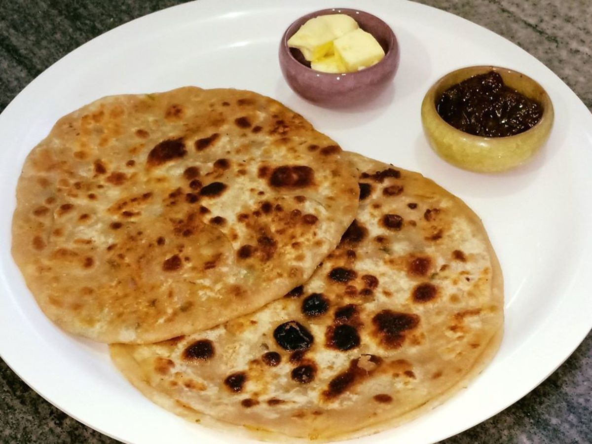

Aloo Paratha Recipe

Ingredients:
- 2 cups all-purpose flour
- 1 teaspoon salt
- 1/4 teaspoon baking powder
- 1/4 cup ghee or oil
- 3/4 cup lukewarm water
- Filling ingredients:
- 2 large potatoes, boiled, peeled, and mashed
- 1 onion, finely chopped
- 1 green chili, finely chopped
- 1/2 teaspoon cumin seeds
- 1/2 teaspoon garam masala powder
- Salt, to taste
- 2 tablespoons coriander leaves, chopped
Instructions:
- In a large mixing bowl, combine flour, salt, and baking powder.
- Add ghee or oil and mix until the dough comes together.
- Gradually add lukewarm water and knead the dough for 5-7 minutes.
- Cover the dough with a damp cloth and let it rest for 30 minutes.
- Divide the dough into 6-8 equal portions.
- Roll out each portion into a ball and flatten it slightly.
-
Place a tablespoon or two of the potato filling in the center of each
flattened dough.
-
Fold the dough over the filling and press the edges together to seal the
paratha.
- Heat a non-stick pan or griddle over medium heat.
-
Cook the paratha for 1-2 minutes on each side, until it's golden brown
and puffed up.
- Brush with melted butter or ghee and serve hot.
Enjoy your delicious Aloo Paratha!
Return to Top
Go to Home